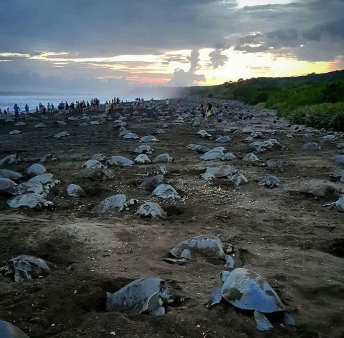

|

Due to habitat loss and degradation, which affects their breeding and foraging sites, sea turtles are gravely threatened. The loss and destruction of nesting sites are caused by human activity, beach erosion, and coastal development, which affects rates of successful reproduction and population expansion. Pollution, overfishing, and habitat damage also lower the quality of foraging grounds, which affects sea turtles' ability to find food and general health. Conservation efforts are essential to preserve and repair nesting beaches, implement coastal management plans, promote sustainable fishing, and protect marine ecosystems. These actions are crucial for protecting sea turtle populations from the negative effects of habitat loss and degradation and ensuring their survival and recovery. |

Sea turtles are in grave risk of extinction due to bycatch, which happens when they unwittingly get caught in fishing gear. This problem arises from the use of fishing gear like nets, longlines, and trawls, which aren't specifically designed to keep turtles out. Sea turtles may drown or suffer damage if they become hooked up or trapped, which reduces their number. Bycatch poses a particular threat to threatened species like the leatherback and loggerhead turtles. To reduce this risk, turtle excluder devices (TEDs) and other turtle-friendly fishing methods must be used. Additionally, fishermen must be taught the importance of reducing bycatch and employing sustainable fishing methods. |

Poaching and illegal trading pose a severe danger to sea turtle populations and habitats. Sea turtles and the components of them, including their eggs, flesh, shells, and skin, are illegally harvested and traded in many parts of the world. Poaching disrupts the sea turtles' delicate population balance, interferes with their natural reproductive cycle, and lowers hatchling survival rates. The demand for sea turtle products, which is fueled by conventional medicine, cultural traditions, and the illegal trade in exotic animals, is what drives this criminal enterprise. To combat this threat, strict adherence to the law and rules against poaching and illegal trading is necessary. Initiatives to raise public awareness of the importance of protecting and conserving sea turtles are also |